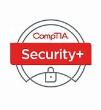

Certification paths
Build proof of security skills
Certifications can help new analysts show baseline knowledge, direction, and commitment to the cybersecurity field.
Where to begin
Different paths, different strengths
Within information security, there are many beginner-friendly certifications that can help start a career. Each path has tradeoffs: broad foundations, vendor-specific depth, networking focus, or cloud security fundamentals.
The best certification depends on the job target. A broad security role may value general concepts, while a network-heavy team may prefer Cisco experience, and a cloud-heavy organization may value Microsoft identity and compliance knowledge.

Foundation
CompTIA Security+
Security+ is widely accepted as an introductory cybersecurity certification. It covers terminology, protocols, threats, controls, and best practices that help analysts build a strong foundation.
Visit CompTIA
Network security
CCNP Security
CCNP Security is a recognized Cisco networking security path. It is stronger for roles that involve network infrastructure, routing, switching, firewalls, and Cisco security environments.
Cisco learning network
Cloud identity
Microsoft SCI Fundamentals
Microsoft's Security, Compliance, and Identity fundamentals path helps learners understand cloud-based security, compliance, identity, and Microsoft service concepts.
Microsoft Learn